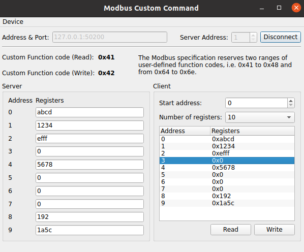

Modbus Custom Command
The example shows how to handle custom Modbus function codes.
The example acts as both Modbus client and server in a single application. The connection between them is established via Modbus TCP. It is used to send and receive custom Modbus requests and adjusts its internal states based on the request and response.
The main purpose of the example is to provide some demo code on how to implement a Modbus client or Modbus server handling custom Modbus function codes.

User-Defined Modbus Function Codes
The Modbus protocol supports function codes in the range 1 - 127 (0x01 - 0x7F HEX). Most of the function codes are well defined and publicly documented. However, there are two ranges that can be used for user-defined functions. Those are 65 - 72 (0x41 - 48 HEX) and 100 - 110 (0x64 - 0x6E HEX). The user can select function codes from these ranges and handle them in some custom way.
This application uses function code 65 (0x41 HEX) to implement CustomRead command and function code 66 (0x42 HEX) to implement CustomWrite command. In this example the custom commands are used to simply read and write the Holding Registers.
Sending Custom Modbus Commands
The custom Modbus commands are sent using the QModbusClient::sendRawRequest() method. This method requires to generate a QModbusRequest object with the desired function code and a list of arguments which will be encoded into a QByteArray:
QModbusDataUnit unit {
QModbusDataUnit::HoldingRegisters,
ui->startAddress->value(),
qMin(ui->numberOfRegisters->currentText().toUShort(),
quint16(10 - ui->startAddress->value())) // do not go beyond 10 entries
};
for (qsizetype i = 0, total = unit.valueCount(); i < total; ++i)
unit.setValue(i, m_model->m_registers[i + unit.startAddress()]);
const quint8 byteCount = quint8(unit.valueCount() * 2);
QModbusRequest writeRequest {
QModbusPdu::FunctionCode(ModbusClient::CustomWrite),
quint16(unit.startAddress()),
quint16(unit.valueCount()), byteCount, unit.values()
};
The QModbusClient::sendRawRequest() method returns a QModbusReply object which can be used to check for errors as usual:
if (auto *reply = m_client.sendRawRequest(writeRequest, ui->serverAddress->value())) {
if (!reply->isFinished()) {
connect(reply, &QModbusReply::finished, this, [this, reply]() {
if (reply->error() == QModbusDevice::ProtocolError) {
statusBar()->showMessage(tr("Write response error: %1 (Modbus exception: 0x%2)")
.arg(reply->errorString()).arg(reply->rawResult().exceptionCode(), -1, 16),
5000);
} else if (reply->error() != QModbusDevice::NoError) {
statusBar()->showMessage(tr("Write response error: %1 (code: 0x%2)").
arg(reply->errorString()).arg(reply->error(), -1, 16), 5000);
}
reply->deleteLater();
}
);
}
} else {
statusBar()->showMessage(tr("Write error: ") + m_client.errorString(), 5000);
}
Custom Modbus Server
The custom server is derived from the QModbusTcpServer class. It overrides the QModbusServer::processPrivateRequest() method.
class ModbusServer : public QModbusTcpServer { Q_OBJECT Q_DISABLE_COPY_MOVE(ModbusServer) public: ModbusServer(QObject *parent = nullptr); private: QModbusResponse processPrivateRequest(const QModbusPdu &request) override; };
The base server class calls the processPrivateRequest() method when a command with a custom function code is received.
The custom implementation handles the CustomRead command by generating a QModbusResponse with the values of requested registers:
if (ModbusClient::CustomRead == request.functionCode()) {
quint16 startAddress, count;
request.decodeData(&startAddress, &count);
QModbusDataUnit unit(QModbusDataUnit::HoldingRegisters, startAddress, count);
if (!data(&unit)) {
return QModbusExceptionResponse(request.functionCode(),
QModbusExceptionResponse::IllegalDataAddress);
}
return QModbusResponse(request.functionCode(), startAddress, quint8(count * 2), unit.values());
}
Handling CustomWrite command includes extracting the new values from the received QModbusPdu, doing the actual value update, and returning a QModbusResponse with the registers that were actually updated:
if (ModbusClient::CustomWrite == request.functionCode()) {
quint8 byteCount;
quint16 startAddress, numberOfRegisters;
request.decodeData(&startAddress, &numberOfRegisters, &byteCount);
if (byteCount % 2 != 0) {
return QModbusExceptionResponse(request.functionCode(),
QModbusExceptionResponse::IllegalDataValue);
}
const QByteArray pduData = request.data().remove(0, WriteHeaderSize);
QDataStream stream(pduData);
QList<quint16> values;
for (int i = 0; i < numberOfRegisters; i++) {
quint16 tmp;
stream >> tmp;
values.append(tmp);
}
if (!writeData({QModbusDataUnit::HoldingRegisters, startAddress, values})) {
return QModbusExceptionResponse(request.functionCode(),
QModbusExceptionResponse::ServerDeviceFailure);
}
return QModbusResponse(request.functionCode(), startAddress, numberOfRegisters);
}
Custom Modbus Client
The custom client is derived from the QModbusTcpClient class. It overrides the QModbusClient::processPrivateResponse() method.
class ModbusClient : public QModbusTcpClient { Q_OBJECT Q_DISABLE_COPY_MOVE(ModbusClient) public: ModbusClient(QObject *parent = nullptr); static constexpr QModbusPdu::FunctionCode CustomRead {QModbusPdu::FunctionCode(0x41)}; static constexpr QModbusPdu::FunctionCode CustomWrite {QModbusPdu::FunctionCode(0x42)}; private: bool processPrivateResponse(const QModbusResponse &response, QModbusDataUnit *data) override; };
The base client class calls the processPrivateResponse() method to process the server responses with custom function codes.
The custom implementation handles the responses with CustomRead and CustomWrite function codes:
bool ModbusClient::processPrivateResponse(const QModbusResponse &response, QModbusDataUnit *data) { if (!response.isValid()) return QModbusClient::processPrivateResponse(response, data); if (CustomRead == response.functionCode()) return collateBytes(response, data); if (CustomWrite == response.functionCode()) return collateMultipleValues(response, data); return QModbusClient::processPrivateResponse(response, data); }
The CustomRead response is handled by decoding the provided QModbusPdu and extracting the values for requested registers:
static bool collateBytes(const QModbusPdu &response, QModbusDataUnit *data) { if (response.dataSize() < MinimumReadResponseSize) return false; quint16 address; quint8 byteCount; response.decodeData(&address, &byteCount); if (byteCount % 2 != 0) return false; if (data) { QDataStream stream(response.data().remove(0, 3)); QList<quint16> values; const quint8 itemCount = byteCount / 2; for (int i = 0; i < itemCount; i++) { quint16 tmp; stream >> tmp; values.append(tmp); } *data = {QModbusDataUnit::HoldingRegisters, address, values}; } return true; }
The CustomWrite response is handled by simply validating the response parameters:
static bool collateMultipleValues(const QModbusPdu &response, QModbusDataUnit *data) { if (response.dataSize() != WriteResponseSize) return false; quint16 address, count; response.decodeData(&address, &count); if (count < 1 || count > 10) return false; if (data) *data = {QModbusDataUnit::HoldingRegisters, address, count}; return true; }
Running the Example
To run the example from Qt Creator, open the Welcome mode and select the example from Examples. For more information, visit Building and Running an Example.
This example cannot be used in conjunction with other applications. Once the example is started, it can only exchange custom Modbus commands within the application itself. All interactions between the client and server use the Modbus TCP protocol.